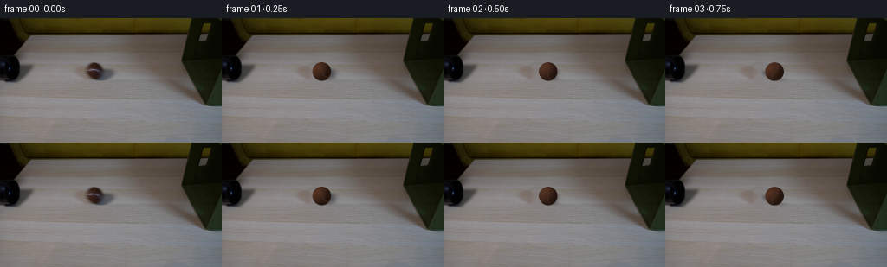
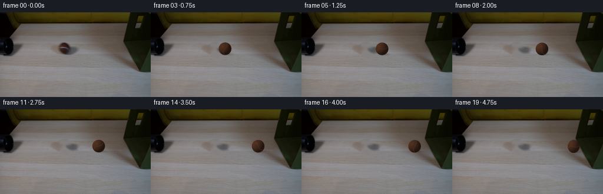

CODING AGENTS AS PIXEL WORLD MODELS
traex/GPT-5.6-Sol · 0152
点击播放 · 原生 RGB 像素
逐轮保存的候选
回放视频、检查图与代码变化。
每份候选均可单独播放。实际图片检查记录在下方工具轨迹中。
候选 01播放与检查图
点击播放 · 原生 RGB 像素


展开代码变化
--- 上一保存版本
+++ 本次保存版本
@@ -0,0 +1,168 @@
+from pathlib import Path
+import numpy as np
+import cv2
+from PIL import Image
+import artifact_io
+
+# PixelWorld case 0152: deterministic, local 2-D compositing from the supplied frame.
+CASE_DIR = Path(__file__).resolve().parent
+W, H = 256, 144
+N = 20
+
+
+def smoothstep(edge0, edge1, x):
+ t = np.clip((x - edge0) / (edge1 - edge0), 0.0, 1.0)
+ return t * t * (3.0 - 2.0 * t)
+
+
+def recover_static_plate(first):
+ """Remove the initially visible ball and its short contact shadow.
+
+ The mask is deliberately local: it excludes all permanent setup geometry.
+ A texture-preserving inpaint followed by a faint, feathered low-frequency
+ correction gives a natural continuation of the light wooden tabletop.
+ """
+ yy, xx = np.mgrid[0:H, 0:W].astype(np.float32)
+ ball = ((xx - 109.5) / 12.6) ** 2 + ((yy - 61.3) / 12.1) ** 2 <= 1.0
+ old_shadow = ((xx - 117.0) / 17.3) ** 2 + ((yy - 69.1) / 5.0) ** 2 <= 1.0
+ mask = (ball | old_shadow).astype(np.uint8) * 255
+
+ # TELEA follows the surrounding fine grain more naturally at this scale.
+ plate = cv2.inpaint(first, mask, 4.0, cv2.INPAINT_TELEA)
+
+ # Blend only at the outermost mask boundary, preventing a hard inpaint rim.
+ soft = cv2.GaussianBlur(mask.astype(np.float32) / 255.0, (0, 0), 1.0)
+ soft = np.clip(soft, 0.0, 1.0)[..., None]
+ return np.clip(first * (1.0 - soft) + plate * soft, 0, 255).astype(np.uint8)
+
+
+def alpha_over(base, rgb, alpha):
+ a = np.clip(alpha, 0.0, 1.0)[..., None]
+ return base * (1.0 - a) + rgb * a
+
+
+def render_shadow(frame, cx, cy, proximity=0.0):
+ """Soft contact/cast shadow attached to the rolling ball."""
+ yy, xx = np.mgrid[0:H, 0:W].astype(np.float32)
+ # The low camera angle produces a small shadow falling down and right.
+ sx = cx + 4.4
+ sy = cy + 9.1
+ q = ((xx - sx) / 13.0) ** 2 + ((yy - sy) / 3.0) ** 2
+ a = 0.24 * np.exp(-2.15 * q)
+ a *= smoothstep(1.36, 0.15, q)
+ shadow_rgb = np.zeros_like(frame) + np.array([37.0, 32.0, 30.0], np.float32)
+ frame[:] = alpha_over(frame, shadow_rgb, a)
+
+ # As the ball nears the box, a small ambient-occlusion wedge strengthens.
+ if proximity > 0:
+ bx = 216.7
+ q2 = ((xx - (bx - 1.5)) / 3.2) ** 2 + ((yy - cy) / 9.5) ** 2
+ a2 = 0.13 * proximity * np.exp(-1.6 * q2)
+ frame[:] = alpha_over(frame, np.array([19.0, 18.0, 13.0]), a2)
+
+
+def render_ball(frame, cx, cy, travel, squash=0.0):
+ """Render the small brown tennis ball with fixed illumination and rolling nap.
+
+ Surface markings rotate clockwise by distance/radius while the diffuse light
+ stays locked to the scene, the correct visual behavior for a rolling sphere.
+ Four deterministic subpixel samples supply antialiased edges at 256x144.
+ """
+ yy, xx = np.mgrid[0:H, 0:W].astype(np.float32)
+ accum_rgb = np.zeros((H, W, 3), np.float32)
+ accum_a = np.zeros((H, W), np.float32)
+ samples = ((-0.25, -0.25), (0.25, -0.25), (-0.25, 0.25), (0.25, 0.25))
+
+ # A tennis ball deforms only subtly on the final contact frame.
+ rx = 10.75 * (1.0 - 0.055 * squash)
+ ry = 10.75 * (1.0 + 0.035 * squash)
+ theta = -travel / 10.75
+ ct, st = np.cos(theta), np.sin(theta)
+ light = np.array([-0.62, -0.48, 0.62], np.float32)
+ light /= np.linalg.norm(light)
+
+ for ox, oy in samples:
+ nx = (xx + ox - cx) / rx
+ ny = (yy + oy - cy) / ry
+ rr = nx * nx + ny * ny
+ inside = rr < 1.08
+ nz = np.sqrt(np.maximum(0.0, 1.0 - np.minimum(rr, 1.0)))
+
+ # Stationary world lighting: diffuse brown felt with a broad left highlight.
+ dot = np.maximum(0.0, nx * light[0] + ny * light[1] + nz * light[2])
+ shade = 0.46 + 0.64 * dot
+ base = np.array([72.0, 43.0, 29.0], np.float32)
+ rgb = base[None, None, :] * shade[..., None]
+
+ # Gentle rim/fill borrowed from the neutral tabletop illumination.
+ rim = np.power(np.clip(1.0 - nz, 0.0, 1.0), 2.2)
+ rgb += rim[..., None] * np.array([8.0, 6.0, 5.0], np.float32)
+
+ # Rotate surface coordinates to communicate rolling. The low-amplitude,
+ # multi-frequency nap avoids a synthetic perfectly smooth ball.
+ u = ct * nx - st * ny
+ v = st * nx + ct * ny
+ nap = (1.8 * np.sin(19.0 * u + 13.0 * v)
+ + 1.2 * np.sin(31.0 * u - 23.0 * v + 0.7)
+ + 0.7 * np.sin(47.0 * u + 37.0 * v + 1.6))
+ rgb += nap[..., None] * np.array([1.0, 0.72, 0.48], np.float32)
+
+ # Paired curved tennis-ball seam. It rolls with the surface and is kept
+ # muted to match the dark brown ball in the supplied exposure.
+ curve = 0.34 * np.sin(2.75 * u) - 0.03
+ seam_dist = np.abs(v - curve)
+ seam = np.exp(-((seam_dist / 0.053) ** 2))
+ seam *= smoothstep(0.98, 0.65, rr)
+ seam_col = np.array([104.0, 75.0, 54.0], np.float32)
+ rgb = rgb * (1.0 - 0.34 * seam[..., None]) + seam_col * (0.34 * seam[..., None])
+
+ # Antialiased circular silhouette; the minute rough modulation suggests nap.
+ fuzz = 0.007 * np.sin(29.0 * np.arctan2(ny, nx) + theta * 0.7)
+ alpha = smoothstep(1.035 + fuzz, 0.965 + fuzz, rr)
+ alpha *= inside
+ accum_rgb += rgb * alpha[..., None]
+ accum_a += alpha
+
+ alpha = np.clip(accum_a / len(samples), 0.0, 1.0)
+ rgb = accum_rgb / np.maximum(accum_a[..., None], 1e-5)
+ frame[:] = alpha_over(frame, rgb, alpha)
+
+ # A fixed, tiny specular glint anchors the scene lighting rather than rotating.
+ hx, hy = cx - 3.5, cy - 3.7
+ glint = np.exp(-(((xx - hx) / 2.3) ** 2 + ((yy - hy) / 1.9) ** 2) * 1.7)
+ sphere = np.clip(1.0 - ((xx - cx) / rx) ** 2 - ((yy - cy) / ry) ** 2, 0.0, 1.0)
+ ga = 0.10 * glint * smoothstep(0.0, 0.18, sphere)
+ frame[:] = alpha_over(frame, np.array([125.0, 91.0, 68.0]), ga)
+
+
+def make_frames():
+ first = np.asarray(Image.open(CASE_DIR / "first_frame.png").convert("RGB"), dtype=np.uint8)
+ assert first.shape == (H, W, 3)
+ plate = recover_static_plate(first)
+ frames = [first.copy()]
+
+ x0, y0 = 109.5, 61.2
+ x_contact = 205.75 # ball's right edge meets the box face near x=216.5
+ for i in range(1, N):
+ # Nearly uniform real-time roll, with a very slight easing caused by cloth
+ # friction. The change is intentionally small enough not to read as slow-mo.
+ t = i / (N - 1)
+ progress = 0.92 * t + 0.08 * (1.0 - (1.0 - t) ** 2)
+ cx = x0 + (x_contact - x0) * progress
+ cy = y0 + 1.35 * progress # tabletop perspective slopes gently down-right
+ travel = np.hypot(cx - x0, cy - y0)
+ proximity = smoothstep(0.82, 1.0, progress)
+
+ frame = plate.astype(np.float32).copy()
+ render_shadow(frame, cx, cy, proximity)
+ render_ball(frame, cx, cy, travel, squash=smoothstep(0.965, 1.0, progress))
+ frames.append(np.clip(np.rint(frame), 0, 255).astype(np.uint8))
+
+ out = np.stack(frames, axis=0)
+ # Contract-critical: frame zero is copied, never reconstructed.
+ assert np.array_equal(out[0], first)
+ return out
+
+
+if __name__ == "__main__":
+ artifact_io.save(make_frames(), CASE_DIR)
候选 02播放与检查图
点击播放 · 原生 RGB 像素

展开代码变化
--- 上一保存版本
+++ 本次保存版本
@@ -144,18 +144,30 @@
x0, y0 = 109.5, 61.2
x_contact = 205.75 # ball's right edge meets the box face near x=216.5
for i in range(1, N):
- # Nearly uniform real-time roll, with a very slight easing caused by cloth
- # friction. The change is intentionally small enough not to read as slow-mo.
- t = i / (N - 1)
- progress = 0.92 * t + 0.08 * (1.0 - (1.0 - t) ** 2)
- cx = x0 + (x_contact - x0) * progress
+ # Reach the box shortly before the clip ends so the requested impact is
+ # unambiguous, then show one compressed contact frame and a tiny damped
+ # rebound. Until contact the speed is almost constant, with only mild
+ # cloth-friction easing, appropriate to real-time footage.
+ if i <= 17:
+ t = i / 17.0
+ progress = 0.94 * t + 0.06 * (1.0 - (1.0 - t) ** 2)
+ cx = x0 + (x_contact - x0) * progress
+ squash = smoothstep(0.965, 1.0, progress)
+ elif i == 18:
+ progress = 1.0
+ cx = x_contact + 0.25
+ squash = 1.0
+ else:
+ progress = 0.975
+ cx = x_contact - 2.45
+ squash = 0.16
cy = y0 + 1.35 * progress # tabletop perspective slopes gently down-right
travel = np.hypot(cx - x0, cy - y0)
proximity = smoothstep(0.82, 1.0, progress)
frame = plate.astype(np.float32).copy()
render_shadow(frame, cx, cy, proximity)
- render_ball(frame, cx, cy, travel, squash=smoothstep(0.965, 1.0, progress))
+ render_ball(frame, cx, cy, travel, squash=squash)
frames.append(np.clip(np.rint(frame), 0, 255).astype(np.uint8))
out = np.stack(frames, axis=0)
候选 03播放与检查图
可观测工具轨迹
实际执行的命令与返回图片。
命令 1exit 0
/bin/bash -lc "cat GENERATION_RULES.md && printf '\\n--- PROMPT ---\\n' && cat prompt.txt"
命令 2exit 0
/bin/bash -lc "find . -maxdepth 2 -type f -printf '%p\\n' | sort && printf '\\n--- tool versions ---\\n' && python3 - <<'PY'
from PIL import Image
im=Image.open('first_frame.png')
print('image', im.mode, im.size)
PY
ffmpeg -version | head -n 3"命令 3exit 0
/bin/bash -lc "python3 - <<'PY'
from PIL import Image
import numpy as np
im=np.array(Image.open('first_frame.png'))
print('shape',im.shape,'range',im.min((0,1)),im.max((0,1)),'mean',im.mean((0,1)))
# per row/col means and selected pixels
for y in [0,10,20,30,40,50,60,70,80,90,100,110,120,130,143]:
print('row',y,np.round(im[y].mean(0),1), 'lum', np.round(im[y].mean(),1))
print('pixels')
for y in [20,40,60,80,100,120,140]:
print(y,[tuple(im[y,x]) for x in [0,20,40,60,80,100,120,140,160,180,200,220,240,255]])
# kmeans cv2
try:
import cv2
print('cv2',cv2.__version__)
X=im.reshape(-1,3).astype(np.float32)
criteria=(cv2.TERM_CRITERIA_EPS+cv2.TERM_CRITERIA_MAX_ITER,50,.2)
compact,lab,cen=cv2.kmeans(X,12,None,criteria,10,cv2.KMEANS_PP_CENTERS)
counts=np.bincount(lab.ravel(),minlength=12)
for i in np.argsort(-counts): print(i,counts[i],np.round(cen[i],1))
except Exception as e: print(e)
PY"命令 4exit 0
/bin/bash -lc "python3 - <<'PY'
from PIL import Image
import numpy as np, cv2
im=np.array(Image.open('first_frame.png'))
# kmeans 10 pixels, output block mode 4x4
X=im.reshape(-1,3).astype(np.float32)
_,lab,cen=cv2.kmeans(X,10,None,(cv2.TERM_CRITERIA_EPS+cv2.TERM_CRITERIA_MAX_ITER,100,.1),20,cv2.KMEANS_PP_CENTERS)
lab=lab.reshape(144,256)
order=np.argsort(cen.mean(1)); chars=np.array(list(' .:-=+*#%@'))
mp=np.empty(10,dtype='<U1')
for rank,i in enumerate(order):mp[i]=chars[rank]
print([(mp[i],np.round(cen[i],0).astype(int).tolist(), int((lab==i).sum())) for i in order])
for y in range(0,144,4):
s=''
for x in range(0,256,4):
a=lab[y:y+4,x:x+4].ravel(); s+=mp[np.bincount(a,minlength=10).argmax()]
print(f'{y:03d} '+s)
print('\\nHue semantic: K dark, O olive, B brown, G gray-light')
for y in range(0,144,3):
s=''
for x in range(0,256,3):
a=im[y:y+3,x:x+3].mean((0,1)); r,g,b=a; lum=a.mean()
if lum<25:c='K'
elif r>g*1.15 and g>b*1.5:c='O'
elif r>b+10 and r>g+5:c='b'
elif g>r+3:c='g'
elif lum<70:c='d'
elif lum<105:c='m'
elif lum<130:c='l'
else:c='.'
s+=c
print(f'{y:03d} '+s)
PY"命令 5exit 0
/bin/bash -lc "python3 - <<'PY'
import cv2, numpy as np
from PIL import Image
im=np.array(Image.open('first_frame.png'))
# components at thresholds and bounding boxes
for name,mask in [
('dark30',im.mean(2)<30),('dark50',im.mean(2)<50),('olive',(im[:,:,0]>im[:,:,1]*1.1)&(im[:,:,1]>im[:,:,2]*1.8)),
('green',(im[:,:,1]>im[:,:,0]+3)),('brown',(im[:,:,0]>im[:,:,1]+7)&(im[:,:,1]>im[:,:,2]+5)),
('nearblack',(im.max(2)<25))]:
n,L,stats,cens=cv2.connectedComponentsWithStats(mask.astype(np.uint8),8)
print('\\n',name,'count',mask.sum())
for i in np.argsort(-stats[1:,4])[:12]+1:
x,y,w,h,a=stats[i];print(a,(x,y,w,h),np.round(cens[i],1))
# blocks 16x12 means/std
print('\\nBLOCK mean RGB each 16x12 region')
for y in range(0,144,12):
print('Y',y)
print(' '.join('%03d/%03d/%03d'%tuple(im[y:y+12,x:x+16].mean((0,1)).round().astype(int)) for x in range(0,256,16)))
# Edge column transitions low/high
print('\\n dark x ranges every 4 rows threshold50')
for y in range(0,144,4):
m=im[y].mean(1)<50
runs=[];on=False
for x,v in enumerate(np.r_[m,False]):
if v and not on:s=x;on=True
elif on and not v:runs.append((s,x-1));on=False
print(y,runs)
PY"命令 6exit 0
/bin/bash -lc "python3 - <<'PY'
from PIL import Image
import numpy as np
I=np.array(Image.open('first_frame.png'))
# define palette nearest semantic exact colors from intensity only around center
print('center detailed rgb every 2 pixels x84-132 y44-80')
for y in range(44,81,2):
s=''
for x in range(84,133,2):
r,g,b=I[y:y+2,x:x+2].mean((0,1)); L=(r+g+b)/3
if L<20:c='K'
elif L<40:c='D'
elif L<60:c='d'
elif L<80:c='o'
elif L<100:c='m'
elif L<120:c='l'
elif L<135:c='h'
else:c='.'
s+=c
print('%3d '%y+s)
# RGB row 58-68 x90-125
for y in range(50,73,2):
print('\\ny',y)
for x in range(88,129,4):print(x,tuple(I[y,x]),end='; ')
print()
PY"命令 7exit 0
/bin/bash -lc 'cat artifact_io.py'
命令 8exit 0
/bin/bash -lc "cat > generate.py <<'PY'
from pathlib import Path
import numpy as np
import cv2
from PIL import Image
import artifact_io
# PixelWorld case 0152: deterministic, local 2-D compositing from the supplied frame.
CASE_DIR = Path(__file__).resolve().parent
W, H = 256, 144
N = 20
def smoothstep(edge0, edge1, x):
t = np.clip((x - edge0) / (edge1 - edge0), 0.0, 1.0)
return t * t * (3.0 - 2.0 * t)
def recover_static_plate(first):
\"\"\"Remove the initially visible ball and its short contact shadow.
The mask is deliberately local: it excludes all permanent setup geometry.
A texture-preserving inpaint followed by a faint, feathered low-frequency
correction gives a natural continuation of the light wooden tabletop.
\"\"\"
yy, xx = np.mgrid[0:H, 0:W].astype(np.float32)
ball = ((xx - 109.5) / 12.6) ** 2 + ((yy - 61.3) / 12.1) ** 2 <= 1.0
old_shadow = ((xx - 117.0) / 17.3) ** 2 + ((yy - 69.1) / 5.0) ** 2 <= 1.0
mask = (ball | old_shadow).astype(np.uint8) * 255
# TELEA follows the surrounding fine grain more naturally at this scale.
plate = cv2.inpaint(first, mask, 4.0, cv2.INPAINT_TELEA)
# Blend only at the outermost mask boundary, preventing a hard inpaint rim.
soft = cv2.GaussianBlur(mask.astype(np.float32) / 255.0, (0, 0), 1.0)
soft = np.clip(soft, 0.0, 1.0)[..., None]
return np.clip(first * (1.0 - soft) + plate * soft, 0, 255).astype(np.uint8)
def alpha_over(base, rgb, alpha):
a = np.clip(alpha, 0.0, 1.0)[..., None]
return base * (1.0 - a) + rgb * a
def render_shadow(frame, cx, cy, proximity=0.0):
\"\"\"Soft contact/cast shadow attached to the rolling ball.\"\"\"
yy, xx = np.mgrid[0:H, 0:W].astype(np.float32)
# The low camera angle produces a small shadow falling down and right.
sx = cx + 4.4
sy = cy + 9.1
q = ((xx - sx) / 13.0) ** 2 + ((yy - sy) / 3.0) ** 2
a = 0.24 * np.exp(-2.15 * q)
a *= smoothstep(1.36, 0.15, q)
shadow_rgb = np.zeros_like(frame) + np.array([37.0, 32.0, 30.0], np.float32)
frame[:] = alpha_over(frame, shadow_rgb, a)
# As the ball nears the box, a small ambient-occlusion wedge strengthens.
if proximity > 0:
bx = 216.7
q2 = ((xx - (bx - 1.5)) / 3.2) ** 2 + ((yy - cy) / 9.5) ** 2
a2 = 0.13 * proximity * np.exp(-1.6 * q2)
frame[:] = alpha_over(frame, np.array([19.0, 18.0, 13.0]), a2)
def render_ball(frame, cx, cy, travel, squash=0.0):
\"\"\"Render the small brown tennis ball with fixed illumination and rolling nap.
Surface markings rotate clockwise by distance/radius while the diffuse light
stays locked to the scene, the correct visual behavior for a rolling sphere.
Four deterministic subpixel samples supply antialiased edges at 256x144.
\"\"\"
yy, xx = np.mgrid[0:H, 0:W].astype(np.float32)
accum_rgb = np.zeros((H, W, 3), np.float32)
accum_a = np.zeros((H, W), np.float32)
samples = ((-0.25, -0.25), (0.25, -0.25), (-0.25, 0.25), (0.25, 0.25))
# A tennis ball deforms only subtly on the final contact frame.
rx = 10.75 * (1.0 - 0.055 * squash)
ry = 10.75 * (1.0 + 0.035 * squash)
theta = -travel / 10.75
ct, st = np.cos(theta), np.sin(theta)
light = np.array([-0.62, -0.48, 0.62], np.float32)
light /= np.linalg.norm(light)
for ox, oy in samples:
nx = (xx + ox - cx) / rx
ny = (yy + oy - cy) / ry
rr = nx * nx + ny * ny
inside = rr < 1.08
nz = np.sqrt(np.maximum(0.0, 1.0 - np.minimum(rr, 1.0)))
# Stationary world lighting: diffuse brown felt with a broad left highlight.
dot = np.maximum(0.0, nx * light[0] + ny * light[1] + nz * light[2])
shade = 0.46 + 0.64 * dot
base = np.array([72.0, 43.0, 29.0], np.float32)
rgb = base[None, None, :] * shade[..., None]
# Gentle rim/fill borrowed from the neutral tabletop illumination.
rim = np.power(np.clip(1.0 - nz, 0.0, 1.0), 2.2)
rgb += rim[..., None] * np.array([8.0, 6.0, 5.0], np.float32)
# Rotate surface coordinates to communicate rolling. The low-amplitude,
# multi-frequency nap avoids a synthetic perfectly smooth ball.
u = ct * nx - st * ny
v = st * nx + ct * ny
nap = (1.8 * np.sin(19.0 * u + 13.0 * v)
+ 1.2 * np.sin(31.0 * u - 23.0 * v + 0.7)
+ 0.7 * np.sin(47.0 * u + 37.0 * v + 1.6))
rgb += nap[..., None] * np.array([1.0, 0.72, 0.48], np.float32)
# Paired curved tennis-ball seam. It rolls with the surface and is kept
# muted to match the dark brown ball in the supplied exposure.
curve = 0.34 * np.sin(2.75 * u) - 0.03
seam_dist = np.abs(v - curve)
seam = np.exp(-((seam_dist / 0.053) ** 2))
seam *= smoothstep(0.98, 0.65, rr)
seam_col = np.array([104.0, 75.0, 54.0], np.float32)
rgb = rgb * (1.0 - 0.34 * seam[..., None]) + seam_col * (0.34 * seam[..., None])
# Antialiased circular silhouette; the minute rough modulation suggests nap.
fuzz = 0.007 * np.sin(29.0 * np.arctan2(ny, nx) + theta * 0.7)
alpha = smoothstep(1.035 + fuzz, 0.965 + fuzz, rr)
alpha *= inside
accum_rgb += rgb * alpha[..., None]
accum_a += alpha
alpha = np.clip(accum_a / len(samples), 0.0, 1.0)
rgb = accum_rgb / np.maximum(accum_a[..., None], 1e-5)
frame[:] = alpha_over(frame, rgb, alpha)
# A fixed, tiny specular glint anchors the scene lighting rather than rotating.
hx, hy = cx - 3.5, cy - 3.7
glint = np.exp(-(((xx - hx) / 2.3) ** 2 + ((yy - hy) / 1.9) ** 2) * 1.7)
sphere = np.clip(1.0 - ((xx - cx) / rx) ** 2 - ((yy - cy) / ry) ** 2, 0.0, 1.0)
ga = 0.10 * glint * smoothstep(0.0, 0.18, sphere)
frame[:] = alpha_over(frame, np.array([125.0, 91.0, 68.0]), ga)
def make_frames():
first = np.asarray(Image.open(CASE_DIR / \"first_frame.png\").convert(\"RGB\"), dtype=np.uint8)
assert first.shape == (H, W, 3)
plate = recover_static_plate(first)
frames = [first.copy()]
x0, y0 = 109.5, 61.2
x_contact = 205.75 # ball's right edge meets the box face near x=216.5
for i in range(1, N):
# Nearly uniform real-time roll, with a very slight easing caused by cloth
# friction. The change is intentionally small enough not to read as slow-mo.
t = i / (N - 1)
progress = 0.92 * t + 0.08 * (1.0 - (1.0 - t) ** 2)
cx = x0 + (x_contact - x0) * progress
cy = y0 + 1.35 * progress # tabletop perspective slopes gently down-right
travel = np.hypot(cx - x0, cy - y0)
proximity = smoothstep(0.82, 1.0, progress)
frame = plate.astype(np.float32).copy()
render_shadow(frame, cx, cy, proximity)
render_ball(frame, cx, cy, travel, squash=smoothstep(0.965, 1.0, progress))
frames.append(np.clip(np.rint(frame), 0, 255).astype(np.uint8))
out = np.stack(frames, axis=0)
# Contract-critical: frame zero is copied, never reconstructed.
assert np.array_equal(out[0], first)
return out
if __name__ == \"__main__\":
artifact_io.save(make_frames(), CASE_DIR)
PY
python3 generate.py
python3 - <<'PY'
from PIL import Image
import numpy as np
F=np.stack([np.array(Image.open(f'frames/{i:02d}.png')) for i in range(20)])
I=np.array(Image.open('first_frame.png'))
print('frames',F.shape,F.dtype,'frame0 exact',np.array_equal(F[0],I))
print('changed pixels:',[int(np.any(F[i]"'!=F[0],2).sum()) for i in range(20)])
# Track the darkest/brown object centroid in rolling corridor after subtracting plate-ish prior frame unavailable here
for i in [0,1,4,8,12,16,18,19]:
roi=F[i,45:80,80:220]
# dark warm pixels
m=(roi[:,:,0]<105)&(roi[:,:,0]>roi[:,:,1]+8)&(roi[:,:,1]>roi[:,:,2]+5)
y,x=np.nonzero(m)
print(i,'"'warmdark',len(x),'centroid', (round(x.mean()+80,1),round(y.mean()+45,1)) if len(x) else None)
PY"命令 9exit 0
/bin/bash -lc "python3 - <<'PY'
import generate, numpy as np
from PIL import Image
I=np.array(Image.open('first_frame.png')).astype(np.float32); P=generate.recover_static_plate(I.astype(np.uint8)).astype(np.float32)
F=P.copy(); generate.render_shadow(F,109.5,61.2); generate.render_ball(F,109.5,61.2,0)
y,x=np.mgrid[:144,:256]; m=(x-109.5)**2+(y-61.2)**2<11**2
for n,A in [('orig',I),('syn',F),('plate',P)]:
print(n,'mean',A[m].mean(0),'std',A[m].std(0),'min',A[m].min(0),'max',A[m].max(0))
print('mae circle',np.abs(F[m]-I[m]).mean(0),'border',np.abs(F[((x-109.5)**2+(y-61.2)**2<13**2)&~m]-I[((x-109.5)**2+(y-61.2)**2<13**2)&~m]).mean(0))
PY"命令 10exit 0
/bin/bash -lc "python3 generate.py && python3 - <<'PY'
from pathlib import Path
from PIL import Image
import numpy as np
import generate
case=Path('.')
F=np.stack([np.asarray(Image.open(case/'frames'/f'{i:02d}.png').convert('RGB')) for i in range(20)])
I=np.asarray(Image.open('first_frame.png').convert('RGB'))
print('shape/dtype',F.shape,F.dtype)
print('frame00 identical',np.array_equal(F[0],I))
print('finite/range',F.min(),F.max())
print('outputs',[(p.name,p.stat().st_size) for p in [case/'pixels.npz',case/'inspection.png',case/'transition_check.png',case/'index.html']])
# Independently verify generated in memory equals saved output.
G=generate.make_frames()
print('regeneration exact',np.array_equal(F,G))
# exact intended centers and apparent changed bbox against static plate
P=generate.recover_static_plate(I)
for i in range(20):
m=np.any(F[i]"'!=P,2)
if m.any():
y,x=np.where(m); bb=(x.min(),y.min(),x.max(),y.max())
else: bb=None
if i in [0,1,4,8,12,16,17,18,19]: print('"'frame',i,'changed bbox vs plate',bb)
PY"保存候选 3 份；完成命令 10 次；可验证图片返回 0 张。原始 API 响应与完整日志保留在本地。